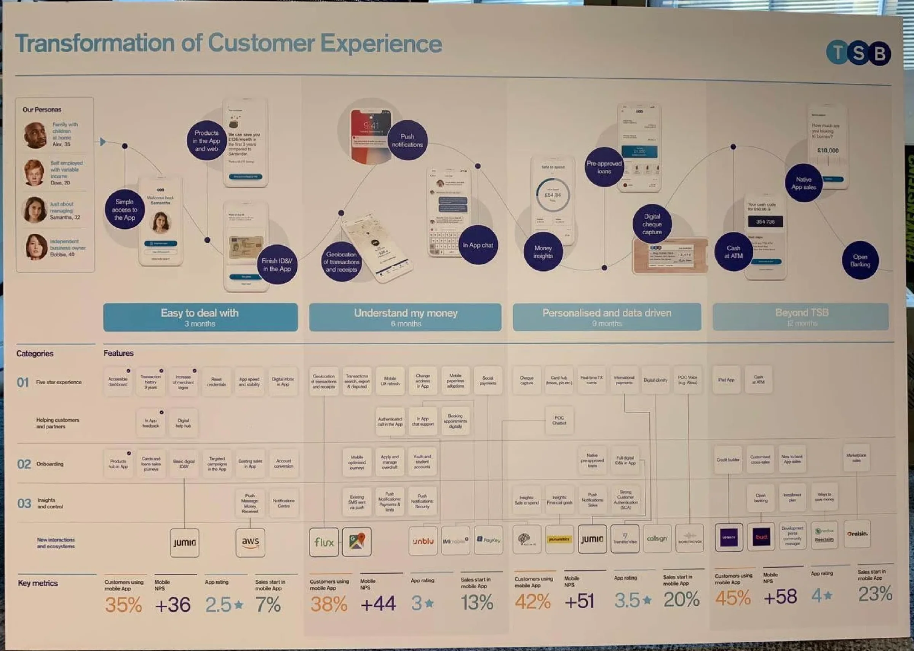
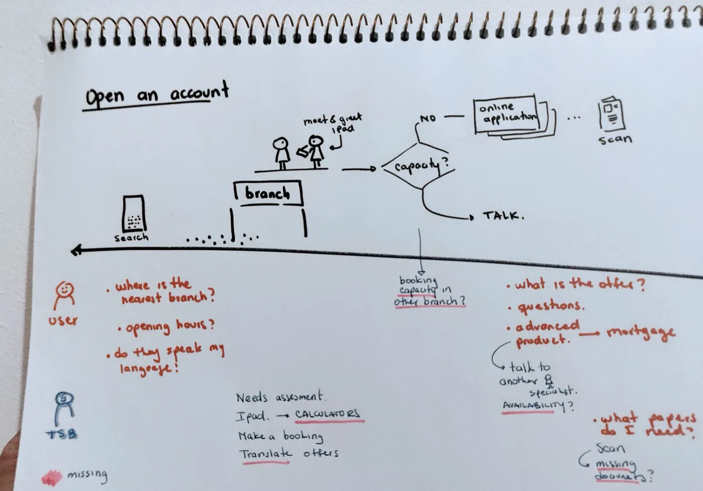
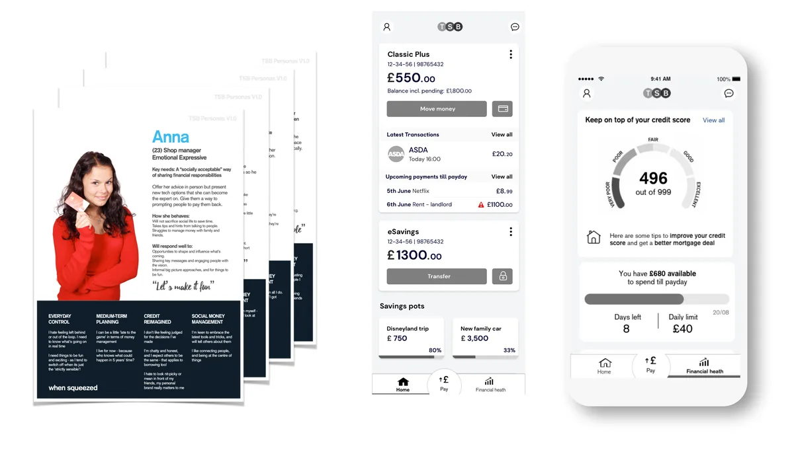
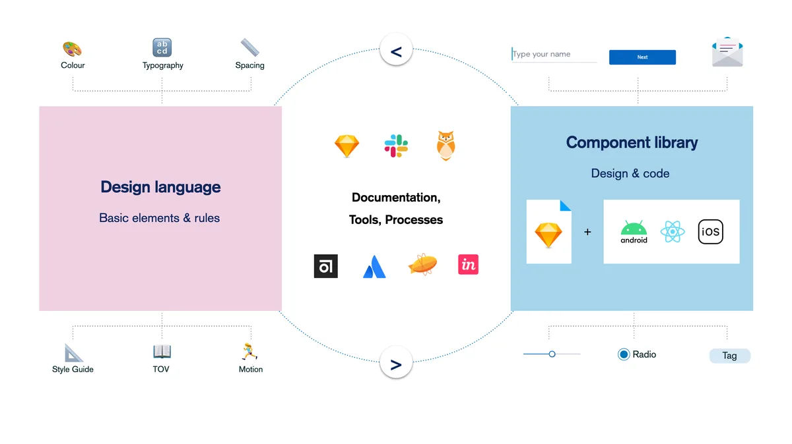
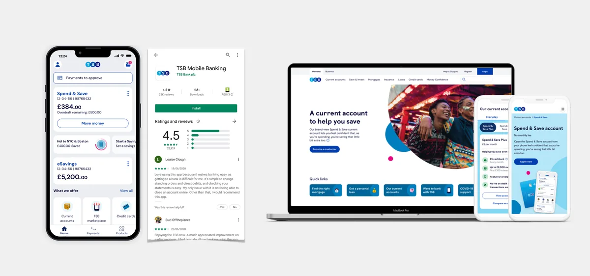
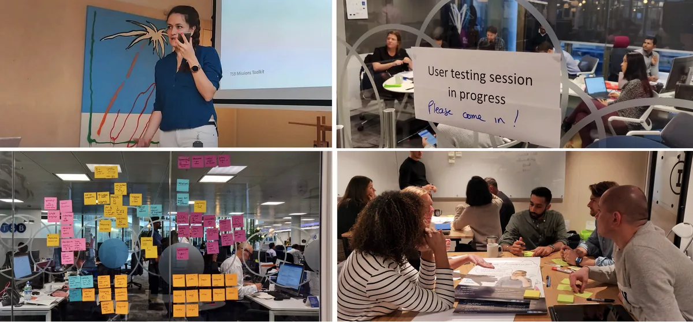

Rebuilding a banking app people could trust again
I joined TSB in 2018, days into the platform migration that locked customers out of their accounts. I led the design of the response, then stayed five years to build the team and the environment around it, and to lead the product roadmap behind the rating going from 1.8 to 4.6 stars.
Short read
- The problem
- I joined TSB days into the platform migration that locked customers out of their accounts. The App Store rating had fallen to 1.8.
- What I saw
- Onboarding, identity verification and complex servicing were where people lost confidence. The app had also grown in pieces, with patterns that contradicted each other and design largely outsourced.
- What I did
- I led the design of the response, built the team and the environment around it, and led the product roadmap. There were no product managers, so that was my team's job.
- The outcome
- The rating went from 1.8 to 4.6 stars. The lasting change was capability: a team, a system, and research in the open.

Trust was the product, and it had gone.
The migration left customers unable to reach their money. I started as it happened. The first job was not a redesign, it was a response: reassure people, listen to them, and keep them updated while the fixes happened behind the scenes. We ran a lightweight front end staffed by people rather than automation, so customers got real answers quickly.
Underneath that, the app had grown in pieces. Parts had been designed separately, so patterns contradicted each other, and design itself was largely outsourced. The App Store rating had fallen to 1.8.
Fixed the moments where people lost confidence
Behavioural data, research, app reviews and frontline servicing issues all pointed at the same places: onboarding, identity verification and complex servicing. We broke those into smaller steps, made progress visible and told people what was happening at each stage, then delivered the improvements incrementally rather than betting on one big release.
Built the team and the environment
I hired and led a team that grew to seventeen across product, research and content, and set up the way of working around it: testing tools, a shared design system, and a seat next to the engineers. I sat with the IBM engineering team to get the app built, which is where I learned to write requirements an engineer can actually use.
Led the product roadmap
There were no product managers, so the roadmap was mine to lead. We planned it as four phases over twelve months: easy to deal with, understand my money, personalised and data driven, and beyond TSB. Each phase had its own measures, and I put the basics people felt every day first, then insight, then personalisation. Features from it went live, including in-app chat support and video banking appointments, and TSB was shortlisted for three industry awards: two at the Banking Tech Awards and one at the Digital Technology Leaders Awards. The board is below.
Built the design system
A shared set of patterns and components so that teams stopped solving the same problem differently, and so a change could reach the whole app. It also carried the rebrand across product and campaign pages.
Made testing normal
I introduced research and testing tools and made continuous customer testing part of how teams worked, so decisions rested on evidence rather than opinion. I am comfortable running A/B tests and working in the CMS alongside marketing.
The plan I led, on the wall.
Four phases over twelve months, the features in each, the partners we would bring in, and the measures for each phase. My team owned this, from the personas at the top to the measures at the bottom.






From 1.8 to 4.6 stars.
The rating is the part people remember, but the durable change was capability. TSB went from buying design to having it: a team, a system, research in the open, and product decisions made with customers in the room. That is the part that kept working after I left.
I learned to rebuild trust under pressure, which is a different skill from designing something new.